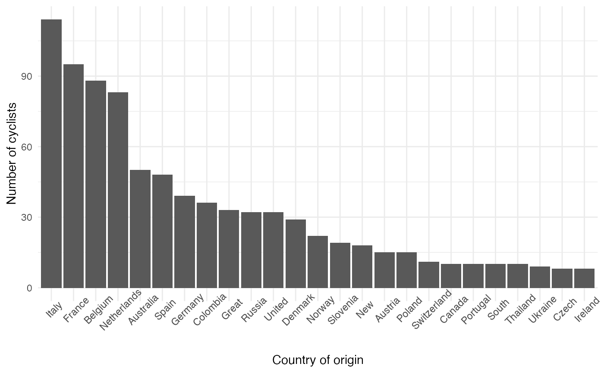
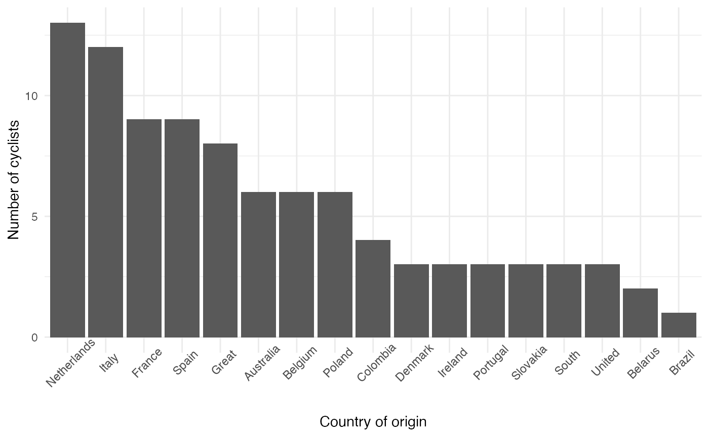

pcs-usage.RmdThe objective of the pcs package is to facilitate the analysis of professional cycling biographical data and rider results from ProCyclingStats.com. This vignette explores some of the ways that the data may be used. All biographical data is “as is” and may not be accurate beyond what is listed on ProCyclingStats. Here we show some worked examples making use of the pcs data sets.
library(pcs) library(ggplot2) library(dplyr) # Combine men and women rider profile data and count the number of riders # by country all_riders <- rider_profiles_men %>% bind_rows(., rider_profiles_women) %>% group_by(nationality) %>% dplyr::summarise(n_riders = n()) %>% top_n(n_riders, n= 25) # Visualize all_riders %>% arrange(desc(n_riders)) %>% ggplot() + geom_bar(aes(x = reorder(nationality, -n_riders, sum), y = n_riders), stat = "identity") + theme_minimal() + theme(axis.text.x = element_text(angle = 45)) + labs(y = "Number of cyclists", x = "Country of origin")

climbers <- rider_profiles_men %>% mutate(sex = "men") %>% bind_rows(., rider_profiles_women %>% mutate(sex = "women")) # Extract tenth percentile of climber points by sex top_points_perc <- climbers %>% group_by(sex) %>% summarise(q = quantile(climber, probs = seq(0,1,0.1)), prob = names(quantile(climber, probs = seq(0,1,0.1)))) %>% filter(prob == "90%") # Identify the countries that the most "prolific" climbers originate from. # Note that this does not correct for age of the rider. best_climbers <- climbers %>% left_join(.,top_points_perc, by = c("sex")) %>% filter(climber >= q) %>% group_by(sex, nationality) %>% dplyr::summarise(n_riders = n()) %>% top_n(n_riders, n = 10) # Visualize best_climbers %>% arrange(desc(n_riders)) %>% ggplot() + geom_bar(aes(x = reorder(nationality, -n_riders, sum), y = n_riders), stat = "identity") + theme_minimal() + theme(axis.text.x = element_text(angle = 45)) + labs(y = "Number of cyclists", x = "Country of origin")
